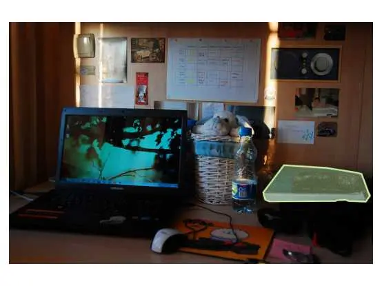
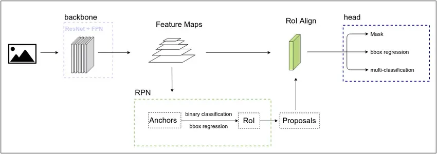
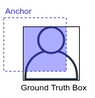
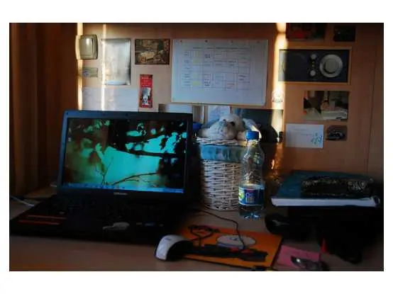

图像分割模型微调

在本教程中，我们将使用COCO数据集当中book分类下的部分图片，对Mask R-CNN模型进行微调，最终实现图像分割的效果。教程通过终端运行，点击下载代码与数据集。
本篇基于MindSpore v1.2.0，Ascend环境运行。
运行本案例需要安装以下依赖项：
Cython
pycocotools
mmcv==0.2.14
可通过
pip install命令执行代码文件夹中的requirements.txt完成。
图像分割功能可以定位图片中的物体，识别物体的边界轮廓。实际效果大致如下图所示：

图片来源于COCO数据集。
数据处理
COCO数据集说明
COCO数据集可以用于图片分类、目标检测、图像分割等场景，是一个评估视觉类模型的业界标准数据集。教程中会使用COCO2017版本对模型进行训练，在正式开始执行代码之前先介绍COCO2017的一些基本信息，以便于用户理解整个数据处理的过程。
COCO2017数据集的结构如下，其中annotations文件夹为标注信息json文件，train2017等文件夹存储了大量图片：
├── annotations # 储存图片标注信息，分为三种类型
│ ├── captions_train2017.json # 看图说话，描述图片的内容
│ ├── captions_val2017.json
│ ├── instances_train2017.json # 目标实例，为本例中使用的类型
│ ├── instances_val2017.json
│ ├── person_keypoints_train2017.json # 人体关键点检测
│ └── person_keypoints_val2017.json
├── train2017 # 用于训练的图片
├── test2017 # 用于测试的图片
├── val2017 # 用于验证的图片
现在进一步说明实验中用到的instance类型标注。COCO数据集标注信息内容较多，下面一步步从大类拆解到细节。总体上，一张图片的标注结构如下所示：
{
"info": info, # 储存图片版本、创建日期等基本信息
"licenses": [license], # 图片的id、name等license信息
"images": [image], # 图片的id、width、height等形状信息
"annotations": [annotation], # 图片的标注信息
"categories": [category] # 图片的分类信息
}
为了实现图片分割的效果，需要解析上面提到的annotations字段。annotations包含的内容有：
annotation{
"id" : int, # 序号
"image_id" : int, # 图片的id，与数据集中的真实图片相对应
"category_id" : int, # 所属的图片类别
"segmentation" : RLE or [polygon], # 使用RLE或polygon格式存储图片
"area" : float, # 标注区域的面积
"bbox" : [x,y,width,height], # 物体边界框
"iscrowd" : 0 or 1, # 值为0：采用polygon格式；值为1：采用RLE格式
}
在数据处理的过程中，会一步步提取出图片、bbox、图片的mask等信息，用于训练Mask R-CNN模型。
编写自定义数据集
数据集由180张包含书籍的图片组成，图像与标注均来自于COCO。案例中采用自定义数据集的方式加载，完整数据处理代码可参考src/dataset.py。
案例中，构造的自定义数据集类为COCOSubDataset，在训练过程中会通过GeneratorDataset接口加载并访问数据集。
COCOSubDataset包含三部分。首先，在类函数__init__中完成数据初始化，并且一步步解析出COCO数据集的图像，以及json中储存的bbox、mask、iscrowd等信息。
class COCOSubDataset():
def __init__(self, coco_root, is_training=True, config=None):
data_type = config.train_data_type
# 调用COCO数据集的接口读取数据
anno_json = os.path.join(coco_root, config.instance_set.format(data_type))
coco = COCO(anno_json)
self.image_files = []
self.image_anno_dict = {}
self.masks = {}
self.masks_shape = {}
# 读取分类的类别信息
train_cls = config.coco_classes
train_cls_dict = {}
for i, cls in enumerate(train_cls):
train_cls_dict[cls] = i
classs_dict = {}
cat_ids = coco.loadCats(coco.getCatIds())
for cat in cat_ids:
classs_dict[cat["id"]] = cat["name"]
# 读取数据集中的图像、mask、mask_shape
image_ids = coco.getImgIds()
images_num = len(image_ids)
for ind, img_id in enumerate(image_ids):
image_info = coco.loadImgs(img_id)
file_name = image_info[0]["file_name"]
anno_ids = coco.getAnnIds(imgIds=img_id, iscrowd=None)
anno = coco.loadAnns(anno_ids)
image_path = os.path.join(coco_root, data_type, file_name)
annos = []
instance_masks = []
image_height = coco.imgs[img_id]["height"]
image_width = coco.imgs[img_id]["width"]
# 进一步处理，获取图像的mask、box、iscrowd和分类信息
for label in anno:
bbox = label["bbox"]
class_name = classs_dict[label["category_id"]]
if class_name in train_cls:
# 获取二进制的coco mask
m = annToMask(label, image_height, image_width)
if m.max() < 1:
print("all black mask!!!!")
continue
# 根据对象是单个还是一组处理mask数据
if label['iscrowd'] and (m.shape[0] != image_height or m.shape[1] != image_width):
m = np.ones([image_height, image_width], dtype=np.bool)
instance_masks.append(m)
# 获取coco数据集中的bounding box
x1, x2 = bbox[0], bbox[0] + bbox[2]
y1, y2 = bbox[1], bbox[1] + bbox[3]
annos.append([x1, y1, x2, y2] + [train_cls_dict[class_name]] + [int(label["iscrowd"])])
else:
print("not in classes: ", class_name)
# 获取图像、标注信息、mask与mask shape
self.image_files.append(image_path)
self.image_anno_dict[image_path] = np.array(annos)
instance_masks = np.stack(instance_masks, axis=0)
self.masks[image_path] = np.array(instance_masks)
self.masks_shape[image_path] = np.array(instance_masks.shape, dtype=np.int32)
然后在__getitem__方法中，返回单个图像和与图像关联的分割信息，返回值包括：
img：图像
annos：图像的bbox、所属分类和iscrowd信息
mask：二进制的图像分割蒙版
mask_shape：图像分割蒙版shape
def __getitem__(self, index):
image_name = self.image_files[index]
img = np.fromfile(image_name, dtype=np.uint8)
annos = np.array(self.image_anno_dict[image_name], dtype=np.int32)
mask = self.masks[image_name]
mask_shape = self.masks_shape[image_name]
return img, annos, mask, mask_shape
最后，__len__返回数据集的大小。
def __len__(self):
return len(self.image_files)
在数据集加载过程中，通过GeneratorDataset接口调用自定义的数据集，并完成map操作处理数据。
def create_new_dataset(image_dir, batch_size=config.batch_size, is_training=True, num_parallel_workers=8):
"""创建用于训练的数据集"""
print("="*30)
cv2.setNumThreads(0)
de.config.set_prefetch_size(8)
# 读取自定义数据集
subcoco_dataset = COCOSubDataset(coco_root=image_dir, is_training=is_training, config=config)
dataset_column_names = ["image", "annotation", "mask", "mask_shape"]
# 完成自定义数据集加载
ds = de.GeneratorDataset(subcoco_dataset, column_names=dataset_column_names,
num_shards=None, shard_id=None,
num_parallel_workers=4, shuffle=is_training, num_samples=10)
# 解码图像
decode = C.Decode()
ds = ds.map(operations=decode, input_columns=["image"])
# 通过map完成数据的过程处理，标注图像的label、box、valid_num
compose_map_func = (lambda image, annotation, mask, mask_shape:
preprocess_fn(image, annotation, mask, mask_shape, is_training))
ds = ds.map(operations=compose_map_func,
input_columns=["image", "annotation", "mask", "mask_shape"],
output_columns=["image", "image_shape", "box", "label", "valid_num", "mask"],
column_order=["image", "image_shape", "box", "label", "valid_num", "mask"],
python_multiprocessing=False,
num_parallel_workers=num_parallel_workers)
ds = ds.batch(batch_size, drop_remainder=True, pad_info={"mask": ([config.max_instance_count, None, None], 0)})
return ds
定义模型
Mask R-CNN网络可以完成图片中实例的分类、定位和分割，教程中的网络实现部分位于FineTune/src/maskrcnn文件夹下，用户可以打开代码查看。下面我们先介绍一些Mask R-CNN的基本信息。
Mask R-CNN包括三个主要的子网络：

图片及模型解析来源于Mask R-CNN模型解析。
backbone网络:
Mask R-CNN的骨干网，主要实现图像的特征提取，这里包括ResNet与FPN(Feature Pyramid Network，图像特征金字塔)。ResNet通过加入残差模块来避免网络层数太多时带来的退化问题，FPN保留卷积过程中的阶段性结果，解决小物体识别困难的问题。ResNet结合FPN生成的特征图可用作后续两个模型的输入。
RPN网络：
RPN(region proposal network)主要用于生成Proposal，即带有前景、背景、包围框信息的区域。在backbone生成特征图之后，PRN会对特征图上的像素生成Anchor，由Anchor与Ground Truth Box的重叠程度可以判断区域内的图像是前景还是背景。训练之后，也可以由多个Anchor组合得到与Ground Truth box最相配的区域，即RoI(Region of Interest)。由RoI生成head网络所需要的数据：RoI中物体的分类，RoI与Ground Truth box的偏移量，RoI的mask信息。我们将带有这些信息的RoI称为Proposal，并将其输入到RoI Align层，经过池化操作之后，就得到了head网络的训练数据。

head网络：
head网络输出物体的分类信息、定位信息和遮罩mask，实现图像分类、图像定位和图像分割。
整体上，Mask R-CNN通过backbone网络、RPN网络、head网络依次实现特征提取、Proposal生成、mask生成，最终完成图像分割的目的。
将预训练模型用于微调
在实现过程中，我们下载已经预训练好的ResNet50模型，针对书籍分类对Mask R-CNN进行微调。
首先需要将下载好的模型放置在FineTune/文件夹路径下，并重命名为resnet50.ckpt，然后运行FineTune/convert_checkpoint.py。在该脚本中提取了ResNet50的主干作为backbone用于后面的训练：
def load_weights(model_path, use_fp16_weight):
ms_ckpt = load_checkpoint(model_path)
weights = {}
for msname in ms_ckpt:
# 提取主干网络
if msname.startswith("layer") or msname.startswith("conv1") or msname.startswith("bn"):
param_name = "backbone." + msname
else:
param_name = msname
# 使用新层替换原网络
if "down_sample_layer.0" in param_name:
param_name = param_name.replace("down_sample_layer.0", "conv_down_sample")
if "down_sample_layer.1" in param_name:
param_name = param_name.replace("down_sample_layer.1", "bn_down_sample")
weights[param_name] = ms_ckpt[msname].data.asnumpy()
parameter_dict = {}
# 提取parameter
for name in weights:
parameter_dict[name] = Parameter(Tensor(weights[name], dtype), name=name)
param_list = []
for key, value in parameter_dict.items():
param_list.append({"name": key, "data": value})
return param_list
运行成功后在原目录下会得到用于重训的resnet50_backbone.ckpt。
if __name__ == "__main__":
parameter_list = load_weights(args_opt.ckpt_file, use_fp16_weight=False)
save_checkpoint(parameter_list, "resnet50_backbone.ckpt")
执行训练
现在，我们执行FineTune/train.py文件，利用之前获取的backbone和数据集，完成训练过程。
if __name__ == '__main__':
rank = 0
device_num = 1
# 调用接口进行数据处理
dataset = create_new_dataset(image_dir=config.coco_root, batch_size=config.batch_size, is_training=True, num_parallel_workers=8)
dataset_size = dataset.get_dataset_size()
print("total images num: ", dataset_size)
print("Create dataset done!")
# 实例化网络
net = Mask_Rcnn_Resnet50(config=config)
net = net.set_train()
# 加载预训练模型
load_path = args_opt.pre_trained
if load_path != "":
param_dict = load_checkpoint(load_path)
if config.pretrain_epoch_size == 0:
for item in list(param_dict.keys()):
if not (item.startswith('backbone') or item.startswith('rcnn_mask')):
param_dict.pop(item)
load_param_into_net(net, param_dict)
# 设定损失函数、学习率、优化器
loss = LossNet()
opt = Momentum(params=net.trainable_params(), learning_rate=0.0001, momentum=config.momentum,
weight_decay=config.weight_decay, loss_scale=config.loss_scale)
# 包装损失函数
net_with_loss = WithLossCell(net, loss)
# 通过TrainOneStepCell自定义训练过程
net = TrainOneStepCell(net_with_loss, opt, sens=config.loss_scale)
# 监控训练过程
time_cb = TimeMonitor(data_size=dataset_size)
loss_cb = LossCallBack(rank_id=rank)
cb = [time_cb, loss_cb]
# 保存训练后的模型
if config.save_checkpoint:
# 设置模型保存参数
ckptconfig = CheckpointConfig(save_checkpoint_steps=config.save_checkpoint_epochs * dataset_size,
keep_checkpoint_max=config.keep_checkpoint_max)
save_checkpoint_path = os.path.join(config.save_checkpoint_path, 'ckpt_' + str(rank) + '/')
# 应用模型保存参数
ckpoint_cb = ModelCheckpoint(prefix='mask_rcnn', directory=save_checkpoint_path, config=ckptconfig)
cb += [ckpoint_cb]
# 进行训练
model = Model(net)
model.train(config.epoch_size, dataset, callbacks=cb, dataset_sink_mode = False)
在7个epoch的训练过程中，可以获得如下输出：
total loss is： 1.3203125
total loss is： 0.88623046875
total loss is： 0.794921875
total loss is： 0.7216796875
total loss is： 0.67138671875
epoch time: 133629.138 ms, per step time: 26725.828 ms
total loss is： 0.65625
total loss is： 0.646484375
total loss is： 0.5712890625
total loss is： 0.56982421875
total loss is： 0.5732421875
epoch time: 4547.359 ms, per step time: 909.472 ms
total loss is： 0.5595703125
total loss is： 0.5166015625
total loss is： 0.8193359375
total loss is： 0.389892578125
total loss is： 0.44970703125
epoch time: 4639.649 ms, per step time: 927.930 ms
total loss is： 0.360107421875
total loss is： 0.25830078125
total loss is： 0.30224609375
total loss is： 0.2236328125
total loss is： 0.1971435546875
epoch time: 4851.436 ms, per step time: 970.287 ms
total loss is： 0.2021484375
total loss is： 0.36376953125
total loss is： 0.1787109375
total loss is： 0.56884765625
total loss is： 0.1864013671875
epoch time: 4904.663 ms, per step time: 980.933 ms
total loss is： 0.184326171875
total loss is： 0.1395263671875
total loss is： 0.301025390625
total loss is： 0.1458740234375
total loss is： 0.36376953125
epoch time: 4838.346 ms, per step time: 967.669 ms
total loss is： 0.1260986328125
total loss is： 0.08843994140625
total loss is： 0.10125732421875
total loss is： 0.09942626953125
total loss is： 0.162109375
epoch time: 5143.703 ms, per step time: 1028.741 ms
经过训练的模型可以分割图片中的书本：
原图：

物体分割：
分离物体与背景：